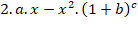

Math Functions
The following math operations are supported: + - * / ^ ( )
Example : 
shell
be written as : 2*a*x - x^2*(1+b)^c
The standard mathematical functions have precedence over +,
-, *, /, ^ operations.
The following standard mathematical functions are
supported:
Acos – inverse
cosine
Asin – inverse
sine
Atan – inverse
tangent
Cos – cosine
Cosh – hyperbolic
cosine
Sin - sine
Tan - tangent
Sinh - hyperbolic sine
Tanh – hyperbolic
tangent
Sqrt - square root
Log –
natural logarithm
Log10 – base 10
logarithm
Exp- exponential
function
Abs - absolute value
Max - max(x1, x2) return
the maximum value of the two x1 or x2
Min - max(x1, x2) return
the maximum value of the two x1 or x2